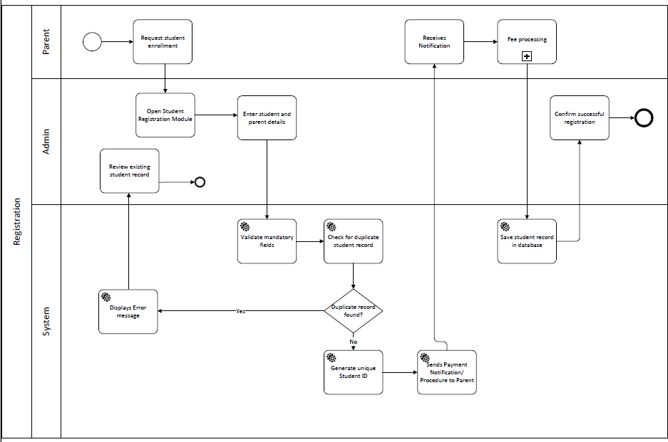

Mapping a school's student registration workflow end-to-end to remove manual bottlenecks and duplicate-record errors.
Student enrollment at a school touches three different stakeholders — parent, admin, and the system itself — and any breakdown in that handoff means duplicate records, enrollment delays, or a parent left waiting on a fee notification. Where exactly does the process break down, and what has to happen at each step for registration to complete cleanly?
I mapped the entire registration workflow as a BPMN swimlane diagram, splitting responsibility across Parent, Admin, and System lanes so every handoff point is explicit — including the failure paths, not just the happy path.
The full BPMN swimlane diagram for student registration, including the duplicate-record error path.

Modeling the duplicate-record check as its own explicit decision point (rather than assuming it "just happens") is what actually exposes where registrations stall in practice — a proper swimlane diagram forces you to account for what happens when a record already exists, not just what happens when everything goes right. That error path, plus the payment-notification loop back to the parent, are the two places most manual registration systems quietly break down.
Want the full breakdown — queries, data model, or wireframes?
View full repo on GitHub